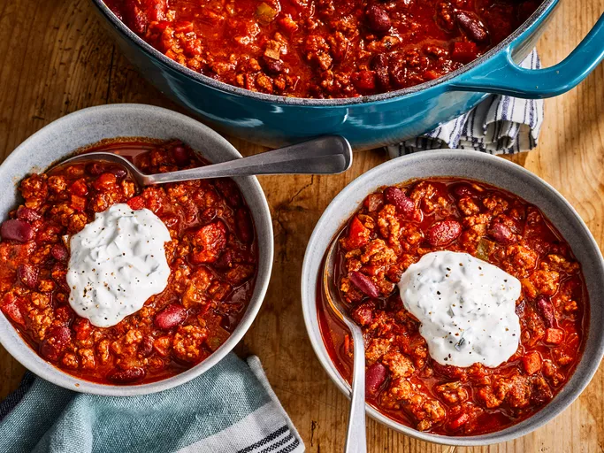

Best Damn Chili

This is a comforting dish that comes from
Allrecipes
. After years of attempts Danny Jaye has finally found perfection.
At a total time of 2hrs 45mins, it may be some hassle but its worth the wait. With
4.7 stars across over 500 reviews this dish will go down in the chili hall of fame.
Ingredients
- ¼ cup olive oil
- 1 yellow onion, chopped
- 1 red bell pepper, chopped
- 1 Anaheim chile pepper, chopped
- 2 red jalapeño chile peppers, chopped
- 4 garlic cloves, minced
- 2 ½ pounds lean ground beef
- ¼ cup Worcestershire sauce
- 1 pinch garlic powder, or to taste
- 2 beef bouillon cubes
- 1 (12 fluid ounce) can or bottle light beer (such as Coors)
- 1 (28 ounce) can crushed San Marzano tomatoes
- 1 (14.5 ounce) can fire-roasted diced tomatoes
- 1 (12 ounce) can tomato paste
- ½ cup white wine
- 2 tablespoons chili powder
- 2 tablespoons ground cumin
- 1 tablespoon brown sugar
- 1 tablespoon chipotle pepper sauce
- 2 ½ teaspoons dried basil
- 1 ½ teaspoons smoked paprika
- 1 teaspoon salt
- ½ teaspoon dried oregano
- ½ teaspoon ground black pepper
- 2 (16 ounce) cans dark red kidney beans (such as Bush's)
- 1 cup sour cream
- 3 tablespoons chopped fresh cilantro
- ½ teaspoon ground cumin
Steps
- Gather Ingredients.
- Heat oil in a large pot over medium heat. Add onion, bell pepper, Anaheim pepper,
jalapeños, and garlic; cook and stir until softened.
- Meanwhile, heat a large skillet over medium-high heat. Add beef; cook and stir until browned and crumbly, 5 to 7 minutes.
- Add Worcestershire sauce and garlic powder; crumble bouillon cubes over beef.
Add beer; continue to cook, scraping any browned bits from the bottom of the skillet, until liquid is hot, about 3 minutes.
- Stir beef mixture into pepper mixture.
- Stir crushed tomatoes, diced tomatoes, tomato paste, and wine into beef mixture;
season with chili powder, 2 tablespoons cumin, brown sugar, pepper sauce, basil, paprika, salt, oregano, and black pepper.
- Bring chili to a boil; reduce heat to medium-low. Cover the pot; simmer until meat and vegetables are very tender and flavors have developed,
about 90 minutes, stirring occasionally.
- Stir kidney beans into chili; simmer until beans are hot, about 30 minutes more.
- Blend sour cream, cilantro, and remaining ½ teaspoon cumin in a food processor until smooth; serve with chili.
- Serve
Home